17. MVC Web Application in a 3-Tier Architecture – Example 3 – Firebird DBMS
17.1. The Firebird Database
In this new version, we will store the list of people in a Firebird database table. Information on installing and managing this DBMS can be found in the document [http://tahe.developpez.com/divers/sql-firebird/]. The screenshots below are from IBExpert, an administration client for Interbase and Firebird DBMSs.
The database is named [dbpersonnes.gdb]. It contains a table named [PERSONNES]:

The [PERSONNES] table will contain the list of people managed by the web application. It was created using the following SQL statements:
- Lines 2–10: The structure of the [PERSONNES] table, designed to store objects of type [Person], reflects the structure of that object. Since the Boolean type does not exist in Firebird, the [MARRIED] field (line 8) has been declared as type [SMALLINT], an integer. Its value will be 0 (unmarried) or 1 (married).
- lines 13–16: integrity constraints that mirror those of the [ValidatePerson] data validator.
- Line 19: The ID field is the primary key of the [PERSONNES] table
The [PERSONNES] table could have the following content:

The database [dbpersonnes.gdb] contains, in addition to the [PERSONNES] table, an object called a generator named [GEN_PERSONNES_ID]. This generator produces sequential integers that we will use to assign a value to the primary key [ID] of the [PERSONNES] class. Let’s take an example to illustrate how it works:
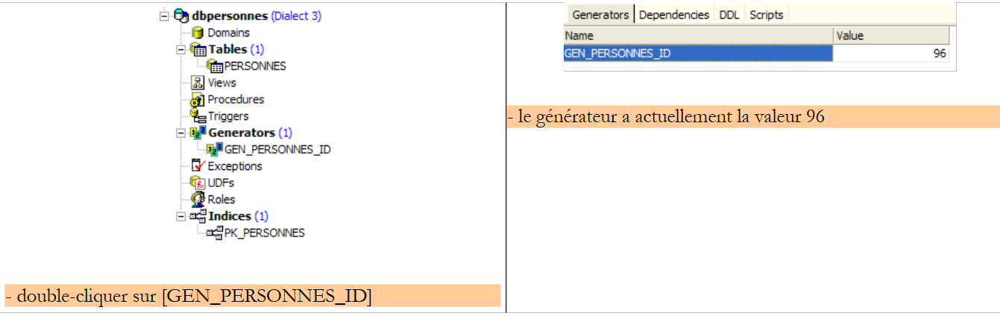 |
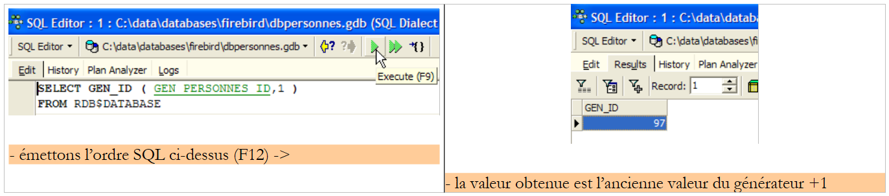 |
We can see that the value of the generator [GEN_PERSONNES_ID] has changed (double-click on it + F5 to refresh):
 |
therefore returns the following value for the [GEN_PERSONNES_ID] generator. GEN_ID is an internal Firebird function, and [RDB$DATABASE] is a system table in this DBMS.
17.2. The Eclipse project for the [dao] and [service] layers
To develop the [dao] and [service] layers of our database application, we will use the following Eclipse project [mvc-personnes-03]:

The project is a simple Java project, not a Tomcat web project. Remember that version 2 of our application will use the [web] layer from version 1. This layer therefore does not need to be written.
[src] folder
This folder contains the source code for the [dao] and [service] layers:

It contains various packages:
- [istia.st.mvc.personnes.dao]: contains the [dao] layer
- [istia.st.mvc.personnes.entites]: contains the [Person] class
- [istia.st.mvc.people.service]: contains the [service] class
- [istia.st.mvc.personnes.tests]: contains the JUnit tests for the [dao] and [service] layers
as well as configuration files that must be in the application’s ClassPath.
[database] folder
This folder contains the Firebird database for people:

- [dbpersonnes.gdb] is the database.
- [dbpersonnes.sql] is the SQL script for generating the database:
Folder [lib]
This folder contains the files required by the application:
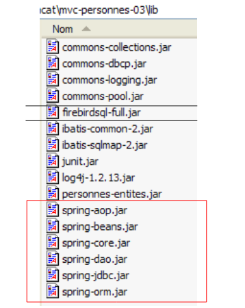 |
Note the presence of the JDBC driver [firebirdsql-full.jar] for the Firebird DBMS, as well as a number of [spring-*.jar] files. We could have used the single [spring.jar] file found in the [dist] folder of the distribution, which contains all of Spring’s classes. We can also use only the archives necessary for the project. This is what we did here, guided by the missing class errors reported by Eclipse and the names of the partial Spring archives. All these archives from the [lib] folder have been placed in the project’s Classpath.
[dist] folder
This folder will contain the archives resulting from the compilation of the application’s classes:

- [personnes-dao.jar]: archive of the [dao] layer
- [personnes-service.jar]: archive of the [service] layer
17.3. The [dao] layer
17.3.1. Components of the [dao] layer
The [dao] layer consists of the following classes and interfaces:
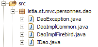
- [IDao] is the interface provided by the [dao] layer
- [DaoImplCommon] is an implementation of this interface where the group of people is stored in a database table. [DaoImplCommon] groups together DBMS-independent functionalities.
- [DaoImplFirebird] is a class derived from [DaoImplCommon] to specifically manage a Firebird database.
- [DaoException] is the type of unhandled exceptions thrown by the [dao] layer. This class is from version 1.
The [IDao] interface is as follows:
- The interface has the same four methods as in the previous version.
The [DaoImplCommon] class implementing this interface will be as follows:
- lines 8–9: the [DaoImpl] class implements the [IDao] interface and therefore the four methods [getAll, getOne, saveOne, deleteOne].
- lines 27–37: The [saveOne] method uses two internal methods, [insertPerson] and [updatePerson], depending on whether a person needs to be added or modified.
- line 50: the private method [check] is the same as in the previous version. We will not revisit it here.
- Line 8: To implement the [IDao] interface, the [DaoImpl] class extends the Spring class [SqlMapClientDaoSupport].
17.3.2. The data access layer [iBATIS]
The Spring class [SqlMapClientDaoSupport] uses a third-party framework [Ibatis SqlMap] available at the URL [http://ibatis.apache.org/]:

[iBATIS] is an Apache project that facilitates the construction of database-driven [DAO] layers. With [iBATIS], the architecture of the data access layer is as follows:
 |
[iBATIS] sits between the application’s [DAO] layer and the database’s JDBC driver. There are alternatives to [iBATIS], such as [Hibernate]:

 |
Using the [iBATIS] framework requires two archives [ibatis-common, ibatis-sqlmap], both of which have been placed in the project’s [lib] folder:
 |
The [SqlMapClientDaoSupport] class encapsulates the generic part of using the [iBATIS] framework, i.e., the code segments found in all [DAO] layers using the [iBATIS] tool. To write the non-generic part of the code—that is, the code specific to the [DAO] layer we are writing—simply derive the [SqlMapClientDaoSupport] class. That is what we are doing here.
The [SqlMapClientDaoSupport] class is defined as follows:

Among the methods of this class, one of them allows us to configure the [iBATIS] client with which we will operate the database:

The [SqlMapClient sqlMapClient] object is the [iBATIS] object used to access a database. On its own, it implements the [iBATIS] layer of our architecture:
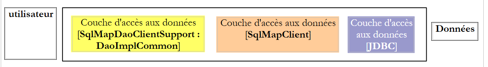 |
A typical sequence of actions with this object is as follows:
- request a connection from a connection pool
- open a transaction
- execute a series of SQL statements stored in a configuration file
- close the transaction
- return the connection to the pool
If our [DaoImplCommon] implementation worked directly with [iBATIS], it would have to perform this sequence repeatedly. Only operation 3 is specific to a [DAO] layer; the other operations are generic. The Spring class [SqlMapClientDaoSupport] will handle operations 1, 2, 4, and 5 itself, delegating operation 3 to its derived class, in this case the [DaoImplCommon] class.
To function, the [SqlMapClientDaoSupport] class requires a reference to the iBATIS object [SqlMapClient sqlMapClient], which will handle communication with the database. This object requires two things to function:
- a [DataSource] object connected to the database from which it will request connections
- one (or more) configuration files where the SQL statements to be executed are externalized. Indeed, these are not in the Java code. They are identified by a code in a configuration file, and the [SqlMapClient sqlMapClient] object uses this code to execute a specific SQL statement.
A preliminary configuration of our [dao] layer that would reflect the architecture above would be as follows:
<!-- Access classes for the [DAO] layer -->
<bean id="dao" class="istia.st.mvc.personnes.dao.DaoImplCommon">
<property name="sqlMapClient">
<ref local="sqlMapClient"/>
</property>
</bean>
Here, the [sqlMapClient] property (line 3) of the [DaoImplCommon] class (line 2) is initialized. It is initialized by the [setSqlMapClient] method of the [DaoImpl] class. This class does not have this method. It is its parent class [SqlMapClientDaoSupport] that has it. So it is actually this class that is being initialized here.
Now, on line 4, we reference an object named "sqlMapClient" that has yet to be created. As mentioned, this object is of type [SqlMapClient], an [iBATIS] type:
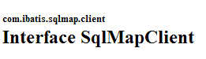
[SqlMapClient] is an interface. Spring provides the [SqlMapClientFactoryBean] class to obtain an object that implements this interface:

Recall that we are seeking to instantiate an object that implements the [SqlMapClient] interface. This does not appear to be the case with the [SqlMapClientFactoryBean] class. This class implements the [FactoryBean] interface (see above). It has the following [getObject()] method:

When Spring is asked for an instance of an object implementing the [FactoryBean] interface, it:
- creates an instance [I] of the class—in this case, it creates an instance of type [SqlMapClientFactoryBean].
- returns to the calling method the result of the [I].getObject() method—the [SqlMapClientFactoryBean].getObject() method will return an object implementing the [SqlMapClient] interface.
To return an object that implements the [SqlMapClient] interface, the [SqlMapClientFactoryBean] class needs two pieces of information required for that object:
- a [DataSource] object connected to the database from which it will request connections
- one (or more) configuration files where the SQL statements to be executed are stored
The [SqlMapClientFactoryBean] class has set methods to initialize these two properties:

We’re making progress... Our configuration file is taking shape and becomes:
<!-- SqlMapClient -->
<bean id="sqlMapClient"
class="org.springframework.orm.ibatis.SqlMapClientFactoryBean">
<property name="dataSource">
<ref local="dataSource"/>
</property>
<property name="configLocation">
<value>classpath:sql-map-config-firebird.xml</value>
</property>
</bean>
<!-- Access classes for the [DAO] layer -->
<bean id="dao" class="istia.st.mvc.personnes.dao.DaoImplCommon">
<property name="sqlMapClient">
<ref local="sqlMapClient"/>
</property>
</bean>
- lines 2-3: the "sqlMapClient" bean is of type [SqlMapClientFactoryBean]. From what has just been explained, we know that when we ask Spring for an instance of this bean, we get an object implementing the iBATIS [SqlMapClient] interface. It is this object that will therefore be obtained on line 14.
- lines 7-9: we specify that the configuration file required by the iBATIS [SqlMapClient] object is named "sql-map-config-firebird.xml" and that it must be located in the application’s ClassPath. The [SqlMapClientFactoryBean].setConfigLocation method is used here.
- Lines 4–6: We initialize the [dataSource] property of [SqlMapClientFactoryBean] using its [setDataSource] method.
Line 5: We reference a bean named "dataSource" that has yet to be created. If we look at the parameter expected by the [setDataSource] method of [SqlMapClientFactoryBean], we see that it is of type [DataSource]:
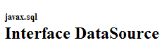
Once again, we are dealing with an interface for which we need to find an implementation class. The role of such a class is to efficiently provide an application with connections to a specific database. A DBMS cannot keep a large number of connections open simultaneously. To reduce the number of open connections at any given time, for each interaction with the database, we must:
- open a connection
- start a transaction
- execute SQL statements
- close the transaction
- close the connection
Opening and closing connections repeatedly is time-consuming. To address these two issues—limiting both the number of open connections at any given time and reducing the overhead of opening and closing them—classes that implement the [DataSource] interface often proceed as follows:
- Upon instantiation, they open N connections to the target database. N generally has a default value and can usually be defined in a configuration file. These N connections remain open at all times and form a pool of connections available to the application’s threads.
- When an application thread requests a connection, the [DataSource] object provides it with one of the N connections opened at startup, if any remain available. When the application closes the connection, it is not actually closed but simply returned to the pool of available connections.
There are various freely available implementations of the [DataSource] interface. Here, we will use the [commons DBCP] implementation available at the URL [http://jakarta.apache.org/commons/dbcp/]:

Using the [commons DBCP] tool requires two archives [commons-dbcp, commons-pool], both of which have been placed in the project’s [lib] folder:
 |
The [BasicDataSource] class from [commons DBCP] provides the [DataSource] implementation we need:

This class will provide us with a connection pool to access our application’s Firebird database [dbpersonnes.gdb]. To do this, we must provide it with the information it needs to create the connections in the pool:
- the name of the JDBC driver to use – initialized with [setDriverClassName]
- the URL of the database to be used – initialized with [setUrl]
- the username of the user owning the connection – initialized with [setUsername] (not setUserName as one might expect)
- their password – initialized with [setPassword]
The configuration file for our [dao] layer could look like this:
<?xml version="1.0" encoding="ISO_8859-1"?>
<!DOCTYPE beans SYSTEM "http://www.springframework.org/dtd/spring-beans.dtd">
<beans>
<!-- the DBCP data source -->
<bean id="dataSource" class="org.apache.commons.dbcp.BasicDataSource"
destroy-method="close">
<property name="driverClassName">
<value>org.firebirdsql.jdbc.FBDriver</value>
</property>
<!-- Note: Do not leave spaces between the two <value> tags in the URL -->
<property name="url">
<value>jdbc:firebirdsql:localhost/3050:C:/data/2005-2006/eclipse/dvp-eclipse-tomcat/mvc-personnes-03/database/dbpersonnes.gdb</value>
</property>
<property name="username">
<value>sysdba</value>
</property>
<property name="password">
<value>masterkey</value>
</property>
</bean>
<!-- SqlMapClient -->
<bean id="sqlMapClient"
class="org.springframework.orm.ibatis.SqlMapClientFactoryBean">
<property name="dataSource">
<ref local="dataSource"/>
</property>
<property name="configLocation">
<value>classpath:sql-map-config-firebird.xml</value>
</property>
</bean>
<!-- classes for accessing the [DAO] layer -->
<bean id="dao" class="istia.st.mvc.personnes.dao.DaoImplCommon">
<property name="sqlMapClient">
<ref local="sqlMapClient"/>
</property>
</bean>
</beans>
- lines 7–9: the name of the JDBC driver for the Firebird DBMS
- lines 11–13: the URL of the Firebird database [dbpersonnes.gdb]. Pay close attention to how this is written. There must be no spaces between the <value> tags and the URL.
- lines 14–16: the connection owner—here, [sysdba], which is the default administrator for Firebird distributions
- Lines 17–19: the connection’s password [masterkey]—also the default value
We’ve made significant progress, but there are still some configuration points to clarify: line 28 references the [sql-map-config-firebird.xml] file, which must configure the iBATIS [SqlMapClient]. Before examining its contents, let’s show the location of these configuration files in our Eclipse project:

- [spring-config-test-dao-firebird.xml] is the configuration file for the [dao] layer we just examined
- [sql-map-config-firebird.xml] is referenced by [spring-config-test-dao-firebird.xml]. We will examine it.
- [personnes-firebird.xml] is referenced by [sql-map-config-firebird.xml]. We will examine it.
The three files mentioned above are located in the [src] folder. In Eclipse, this means that at runtime they will be present in the project’s [bin] folder (not shown above). This folder is part of the application’s ClassPath. Ultimately, the three files mentioned above will therefore be present in the application’s ClassPath. This is necessary.
The [sql-map-config-firebird.xml] file is as follows:
<?xml version="1.0" encoding="UTF-8" ?>
<!DOCTYPE sqlMapConfig
PUBLIC "-//iBATIS.com//DTD SQL Map Config 2.0//EN"
"http://www.ibatis.com/dtd/sql-map-config-2.dtd">
<sqlMapConfig>
<sqlMap resource="people-firebird.xml"/>
</sqlMapConfig>
- This file must have <sqlMapConfig> as its root tag (lines 6 and 8)
- Line 7: The <sqlMap> tag is used to specify the files containing the SQL statements to be executed. There is often—though not necessarily—one file per table. This allows SQL statements for a given table to be grouped together in a single file. However, SQL statements involving multiple tables are common. In such cases, the previous structure does not apply. It is simply important to remember that all files designated by the <sqlMap> tags will be merged. These files are searched for in the application’s ClassPath.
The [personnes-firebird.xml] file describes the SQL statements that will be executed on the [PERSONNES] table in the Firebird database [dbpersonnes.gdb]. Its content is as follows:
<?xml version="1.0" encoding="UTF-8" ?>
<!DOCTYPE sqlMap
PUBLIC "-//iBATIS.com//DTD SQL Map 2.0//EN"
"http://www.ibatis.com/dtd/sql-map-2.dtd">
<sqlMap>
<!-- alias for the [Person] class -->
<typeAlias alias="Person.class"
type="istia.st.mvc.personnes.entites.Personne"/>
<!-- mapping table [PERSONNES] - object [Person] -->
<resultMap id="Person.map"
class="Person.class">
<result property="id" column="ID" />
<result property="version" column="VERSION" />
<result property="last_name" column="LAST_NAME"/>
<result property="firstName" column="FIRSTNAME"/>
<result property="dateOfBirth" column="DATE_OF_BIRTH"/>
<result property="lastName" column="LASTNAME"/>
<result property="nbEnfants" column="NBENFANTS"/>
</resultMap>
<!-- list of all people -->
<select id="Person.getAll" resultMap="Person.map" > select ID, VERSION, LAST_NAME,
FIRST_NAME, DATE_OF_BIRTH, MARRIED, NUMBER_OF_CHILDREN FROM PEOPLE</select>
<!-- retrieve a specific person -->
<select id="Person.getOne" resultMap="Person.map" >select ID, VERSION, LAST_NAME,
FIRST_NAME, BIRTHDATE, MARRIED, CHILDREN FROM PEOPLE WHERE ID=#value#</select>
<!-- add a person -->
<insert id="Person.insertOne" parameterClass="Person.class">
<selectKey keyProperty="id">
SELECT GEN_ID(GEN_PERSONNES_ID,1) as "value" FROM RDB$$DATABASE
</selectKey>
insert into
PERSONS(ID, VERSION, LAST_NAME, FIRST_NAME, DATE_OF_BIRTH, MARRIED_TO, NUMBER_OF_CHILDREN)
VALUES(#id#, #version#, #lastName#, #firstName#, #dateOfBirth#, #spouse#,
#nbChildren#) </insert>
<!-- update a person -->
<update id="Person.updateOne" parameterClass="Person.class"> update
PERSONS set VERSION=#version#+1, LAST_NAME=#last_name#, FIRST_NAME=#first_name#, BIRTH_DATE=#birth_date#,
SPOUSE=#spouse#, CHILDREN=#children# WHERE ID=#id# and
VERSION=#version#</update>
<!-- delete a person -->
<delete id="Person.deleteOne" parameterClass="int"> delete FROM PEOPLE WHERE
ID=#value# </delete>
</sqlMap>
- The file must have <sqlMap> as the root tag (lines 7 and 45)
- Lines 9–10: To make writing the file easier, we give the alias [Person.class] to the class [istia.st.springmvc.personnes.entites.Person].
- lines 12-21: defines the mappings between columns in the [PERSONNES] table and fields in the [Personne] object.
- Lines 23–24: The SQL [SELECT] statement to retrieve all people from the [PERSONNES] table
- lines 26–27: the SQL [select] statement to retrieve a specific person from the [PERSONNES] table
- Lines 29–36: the SQL [insert] statement that inserts a person into the [PERSONS] table
- lines 38-41: the SQL [update] statement that updates a person in the [PERSONS] table
- lines 42-44: the SQL command [delete] that deletes a person from the [PERSONS] table
The role and meaning of the contents of the [people-firebird.xml] file will be explained through an examination of the [DaoImplCommon] class, which implements the [dao] layer.
17.3.3. The [DaoImplCommon] class
Let’s revisit the data access architecture:
 |
The [DaoImplCommon] class is as follows:
We will examine the methods one by one.
getAll
This method retrieves all the people in the list. Its code is as follows:
First, let’s recall that the [DaoImplCommon] class derives from the Spring [SqlMapClientDaoSupport] class. It is this class that provides the [getSqlMapClientTemplate()] method used in line 3 above. This method has the following signature:

The [SqlMapClientTemplate] type encapsulates the [SqlMapClient] object from the [iBATIS] layer. It is through this that we will access the database. The [iBATIS] SqlMapClient type could be used directly since the [SqlMapClientDaoSupport] class has access to it:

The drawback of the [iBATIS] SqlMapClient class is that it throws [SQLException] exceptions, a controlled exception type, i.e., one that must be handled by a try/catch block or declared in the signature of the methods that throw it. However, let us remember that the [dao] layer implements an [IDao] interface whose methods do not include exceptions in their signatures. The methods of the classes implementing the [IDao] interface therefore cannot, either, have exceptions in their signatures. We must therefore intercept every [SQLException] thrown by the [iBATIS] layer and encapsulate it in an unchecked exception. The [DaoException] type from our project would be suitable for this encapsulation.
Rather than handling these exceptions ourselves, we will entrust them to the Spring type [SqlMapClientTemplate], which encapsulates the [SqlMapClient] object from the [iBATIS] layer. Indeed, [SqlMapClientTemplate] was designed to intercept [SQLException] exceptions thrown by the [SqlMapClient] layer and encapsulate them in an unhandled [ DataAccessException] type. This behavior suits us. We simply need to remember that the [dao] layer is now capable of throwing two types of unhandled exceptions:
- our custom [DaoException] type
- the Spring [DataAccessException] type
The [SqlMapClientTemplate] type is defined as follows:

It implements the following [SqlMapClientOperations] interface:

This interface defines methods capable of utilizing the contents of the [people-firebird.xml] file:
[queryForList]

This method allows you to issue a [SELECT] statement and retrieve the result as a list of objects:
- [statementName]: the identifier (id) of the [select] statement in the configuration file
- [parameterObject]: the "parameter" object for a parameterized [SELECT]. The "parameter" object can take two forms:
- an object conforming to the JavaBean standard: the parameters of the [SELECT] statement are then the names of the JavaBean’s fields. When the [SELECT] statement is executed, they are replaced by the values of these fields.
- a dictionary: the parameters of the [select] statement are then the keys of the dictionary. When the [select] statement is executed, these are replaced by their associated values in the dictionary.
- If the [SELECT] returns no rows, the [List] result is an empty object but not null (to be verified).
[queryForObject]

This method is conceptually identical to the previous one but returns only a single object. If the [SELECT] returns no rows, the result is the null pointer.
[insert]

This method executes an SQL [insert] statement configured by the second parameter. The returned object is the primary key of the row that was inserted. There is no requirement to use this result.
[update]

This method executes an SQL [update] statement configured by the second parameter. The result is the number of rows modified by the SQL [update] statement.
[delete]

This method executes an SQL [delete] statement configured by the second parameter. The result is the number of rows deleted by the SQL [delete] statement.
Let’s return to the [getAll] method of the [DaoImplCommon] class:
- Line 4: The [select] statement named "Person.getAll" is executed. It has no parameters, so the "parameter" object is null.
In [people-firebird.xml], the [select] statement named "Person.getAll" is as follows:
<?xml version="1.0" encoding="UTF-8" ?>
<!DOCTYPE sqlMap
PUBLIC "-//iBATIS.com//DTD SQL Map 2.0//EN"
"http://www.ibatis.com/dtd/sql-map-2.dtd">
<sqlMap>
<!-- alias for the [Person] class -->
<typeAlias alias="Person.class"
type="istia.st.mvc.personnes.entites.Personne"/>
<!-- mapping table [PERSONNES] - object [Person] -->
<resultMap id="Person.map"
class="Person.class">
<result property="id" column="ID" />
<result property="version" column="VERSION" />
<result property="last_name" column="LAST_NAME"/>
<result property="firstName" column="FIRSTNAME"/>
<result property="dateOfBirth" column="DATE_OF_BIRTH"/>
<result property="lastName" column="LASTNAME"/>
<result property="nbEnfants" column="NBENFANTS"/>
</resultMap>
<!-- list of all people -->
<select id="Person.getAll" resultMap="Person.map" > select ID, VERSION, LAST_NAME,
FIRST_NAME, DATE_OF_BIRTH, MARRIED, NUMBER_OF_CHILDREN FROM PEOPLE</select>
...
</sqlMap>
- Line 23: The SQL statement "Person.getAll" is unparameterized (no parameters in the query text).
- Line 3 of the [getAll] method calls for the execution of the [select] query named "Personne.getAll". This query will be executed. [iBATIS] relies on JDBC. We therefore know that the result of the query will be returned as a [ResultSet] object. Line 23: the [resultMap] attribute of the <select> tag tells [iBATIS] which "resultMap" to use to convert each row of the obtained [ResultSet] into an object. It is the "resultMap" [Person.map] defined in lines 12–21 that specifies how to map a row from the [PERSONNES] table to an object of type [Person]. [iBATIS] will use these mappings to return a list of [Person] objects based on the rows in the [ResultSet].
- Line 3 of the [getAll] method then returns a collection of [Person] objects
- The [queryForList] method may throw a Spring [DataAccessException]. We let it propagate.
We will explain the other methods of the [AbstractDaoImpl] class more briefly, as the essentials of using [iBATIS] have already been covered in the discussion of the [getAll] method.
getOne
This method retrieves a person identified by their [id]. Its code is as follows:
- line 4: requests the execution of the [select] statement named "Person.getOne". This is the following in the [people-firebird.xml] file:
<!-- retrieve a specific person -->
<select id="Person.getOne" resultMap="Person.map" parameterClass="int">
select ID, VERSION, LAST_NAME, FIRST_NAME, BIRTHDATE, MARRIED, CHILDREN FROM
PERSONS WHERE ID=#value#</select>
The SQL query is configured by the #value# parameter (line 4). The #value# attribute specifies the value of the parameter passed to the SQL query when that parameter is of a simple type: Integer, Double, String, etc. In the attributes of the <select> tag, the [parameterClass] attribute indicates that the parameter is of type Integer (line 2). In line 5 of [getOne], we see that this parameter is the ID of the person being searched for, in the form of an Integer object. This type conversion is mandatory since the second parameter of [queryForList] must be of type [Object].
The result of the [select] query will be converted to an object via the [resultMap="Personne.map"] attribute (line 2). We will therefore obtain a [Personne] type.
- lines 7–11: if the [select] query returned no rows, we retrieve the null pointer from line 4. This means the person being searched for was not found. In this case, we throw a [DaoException] with code 2 (lines 9–10).
- line 13: if no exception occurred, then the requested [Person] object is returned.
deleteOne
This method allows you to delete a person identified by their [id]. Its code is as follows:
- lines 4-5: requests execution of the [delete] command named "Person.deleteOne". This is the following in the [people-firebird.xml] file:
<!-- delete a person -->
<delete id="Person.deleteOne" parameterClass="int"> delete FROM PEOPLE WHERE
ID=#value# </delete>
The SQL command is configured by the #value# parameter (line 3) of type [parameterClass="int"] (line 2). This will be the ID of the person being searched for (line 5 of deleteOne)
- line 4: the result of the [SqlMapClientTemplate].delete method is the number of rows deleted.
- Lines 7–8: If the [delete] query did not delete any rows, this means the person does not exist. A [DaoException] with code 2 is thrown (line 8).
saveOne
This method allows you to add a new person or modify an existing one. Its code is as follows:
- line 4: we verify the person’s validity using the [check] method. This method already existed in the previous version and had been commented out at the time. It throws a [DaoException] if the person is invalid. We let this exception propagate.
- line 6: if we reach this point, it means no exception occurred. The person is therefore valid.
- Lines 6–11: Depending on the person’s ID, this is either an addition (ID = -1) or an update (ID ≠ -1). In both cases, two internal class methods are called:
- insertPersonne: for adding
- updatePersonne: for the update
insertPerson
This method allows you to add a new person. Its code is as follows:
- Line 4: Set the version number of the person being created to 1
- line 9: insert using the query named "Person.insertOne", which is as follows:
<insert id="Person.insertOne" parameterClass="Person.class">
<selectKey keyProperty="id">
SELECT GEN_ID(GEN_PERSONNES_ID,1) as "value" FROM RDB$$DATABASE
</selectKey>
insert into
PERSONS(ID, VERSION, LAST_NAME, FIRST_NAME, DATE_OF_BIRTH, MARRIED_TO, NUMBER_OF_CHILDREN)
VALUES(#id#, #version#, #lastName#, #firstName#, #dateOfBirth#, #spouse#,
#nbChildren#) </insert>
This is a parameterized query, and the parameter is of type [Person] (parameterClass="Person.class", line 1). The fields of the [Person] object passed as a parameter (line 9 of insertPersonne) are used to populate the columns of the row to be inserted into the [PERSONS] table (lines 5–8). We have a problem to solve. During an insertion, the [Person] object to be inserted has an ID equal to -1. This value must be replaced with a valid primary key. To do this, we use lines 2–4 of the <selectKey> tag above. They specify:
- (continued)
- the SQL query to execute to obtain a primary key value. The one shown here is the one we presented in Section 17.1. Two points are worth noting:
- "as 'value'" is mandatory. You can also write "as value", but "value" is a Firebird keyword that must be protected by quotation marks.
- The Firebird table is actually named [RDB$DATABASE]. However, the $ character is interpreted by [iBATIS]. It was escaped by doubling it.
- The field of the [Person] object that must be initialized with the value retrieved by the [SELECT] statement, in this case the [id] field. This field is specified by the [keyProperty] attribute on line 2.
- the SQL query to execute to obtain a primary key value. The one shown here is the one we presented in Section 17.1. Two points are worth noting:
- Lines 6-7: For testing purposes, we will wait 10 ms before performing the insertion to check for conflicts between threads attempting to make additions simultaneously.
updatePerson
This method allows you to modify a person already existing in the [PERSONNES] table. Its code is as follows:
- An update can fail for at least two reasons:
- the person to be updated does not exist
- the person to be updated exists, but the thread attempting to modify it does not have the correct version
- lines 7-8: the SQL [update] query named "Person.updateOne" is executed. It is as follows:
<!-- update a person -->
<update id="Person.updateOne" parameterClass="Person.class"> update
PERSONS set VERSION=#version#+1, LAST_NAME=#last_name#, FIRST_NAME=#first_name#, BIRTHDATE=#birthdate#,
LAST_NAME=#lastName#, CHILDREN=#children# WHERE ID=#id# and
VERSION=#version#</update>
- (continued)
- Line 2: The query is parameterized and accepts a [Person] type as a parameter (parameterClass="Person.class"). This is the person to be modified (line 8 – updatePerson).
- We only want to modify the person in the [PERSONS] table that has the same ID and version as the parameter. That is why we have the constraint [WHERE ID=#id# and VERSION=#version#]. If this person is found, they are updated with the parameter person and their version is incremented by 1 (line 3 above).
- Line 9: We retrieve the number of rows updated.
- Lines 10–11: If this number is zero, a [DaoException] with code 2 is thrown, indicating that either the person to be updated does not exist, or their version has changed in the meantime.
17.4. Tests for the [dao] layer
17.4.1. Testing the [DaoImplCommon] implementation
Now that we have written the [dao] layer, we propose to test it with JUnit tests:
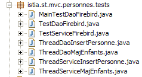
Before performing extensive testing, we can start with a simple [main] program that will display the contents of the [PERSONNES] table. This is the [MainTestDaoFirebird] class:
The configuration file [spring-config-test-dao-firebird.xml] for the [dao] layer, used on lines 13–14, is as follows:
<?xml version="1.0" encoding="ISO_8859-1"?>
<!DOCTYPE beans SYSTEM "http://www.springframework.org/dtd/spring-beans.dtd">
<beans>
<!-- the DBCP data source -->
<bean id="dataSource" class="org.apache.commons.dbcp.BasicDataSource"
destroy-method="close">
<property name="driverClassName">
<value>org.firebirdsql.jdbc.FBDriver</value>
</property>
<!-- Note: Do not leave spaces between the two <value> tags -->
<property name="url">
<value>jdbc:firebirdsql:localhost/3050:C:/data/2005-2006/eclipse/dvp-eclipse-tomcat/mvc-personnes-03/database/dbpersonnes.gdb</value>
</property>
<property name="username">
<value>sysdba</value>
</property>
<property name="password">
<value>masterkey</value>
</property>
</bean>
<!-- SqlMapClient -->
<bean id="sqlMapClient"
<class="org.springframework.orm.ibatis.SqlMapClientFactoryBean">
<property name="dataSource">
<ref local="dataSource"/>
</property>
<property name="configLocation">
<value>classpath:sql-map-config-firebird.xml</value>
</property>
</bean>
<!-- classes for accessing the [DAO] layer -->
<bean id="dao" class="istia.st.mvc.personnes.dao.DaoImplCommon">
<property name="sqlMapClient">
<ref local="sqlMapClient"/>
</property>
</bean>
</beans>
This file is the one discussed in Section 17.3.2.
For testing purposes, the Firebird DBMS is launched. The contents of the [PERSONNES] table are as follows:

Running the [MainTestDaoFirebird] program produces the following screen output:

We have successfully obtained the list of people. We can now proceed to the JUnit test.
The JUnit test [TestDaoFirebird] is as follows:
- Tests [test1] through [test5] are the same as in version 1, except for [test4], which has changed slightly. Test [test6] is new. We will only comment on these two tests.
[test4]
[test4] aims to test the [updatePersonne - DaoImplCommon] method. Here is the code for that method:
- Lines 4-5: We wait 10 ms. This forces the thread executing [updatePerson] to lose the CPU, which may increase our chances of seeing access conflicts between concurrent threads.
[test4] launches N=100 threads tasked with simultaneously incrementing the number of children for the same person by 1. We want to see how version conflicts and access conflicts are handled.
The threads are created in lines 8–13. Each one will increment the number of children for the person created in lines 3–5 by 1. The [ThreadDaoMajEnfants] update threads are as follows:
A person update may fail because the person we want to modify does not exist or because they were previously updated by another thread. These two cases are handled here on lines 67–69. In both cases, the [updatePersonne] method throws a [DaoException] with code 2. The thread will then be forced to restart the update procedure from the beginning (while loop, line 34).
[test6]
[test6] is intended to test the [insertPersonne - DaoImplCommon] method. Here is the code for that method:
- Lines 6-7: We wait 10 ms to force the thread executing [insertPerson] to lose the CPU, thereby increasing our chances of seeing conflicts caused by threads performing inserts at the same time.
The code for [test6] is as follows:
We create 100 threads that will simultaneously insert 100 different people. These 100 threads will all obtain a primary key for the person they need to insert, then be paused for 10 ms (line 10 – insertPerson) before being able to perform their insertion. We want to verify that everything goes smoothly and, in particular, that they do indeed obtain different primary key values.
- Lines 7–11: An array of 100 people is created. These people are all copies of the person p created in lines 4–5.
- Lines 14–17: The 100 insertion threads are launched. Each is responsible for inserting one of the 100 people created previously.
- Lines 19–23: [test6] waits for each of the 100 threads it launched to finish. When it detects that thread number i has finished, it deletes the person that thread just inserted.
The insertion thread [ThreadDaoInsertPersonne] is as follows:
- Lines 19–22: The thread constructor stores the person to be inserted and the [DAO] layer to be used for the insertion.
- line 30: the person is inserted. If an exception occurs, it is propagated to [test6].
Tests
During testing, we obtain the following results:
 |
The [test4] test therefore fails. The number of children has dropped to 69 instead of the expected 100. What happened? Let’s examine the console logs. They show the existence of exceptions thrown by Firebird:
Exception in thread "Thread-62" org.springframework.jdbc.UncategorizedSQLException: SqlMapClient operation; uncategorized SQLException for SQL []; SQL state [HY000]; error code [335544336];
--- The error occurred in personnes-firebird.xml.
--- The error occurred while applying a parameter map.
--- Check the Personne.updateOne-InlineParameterMap.
--- Check the statement (update failed).
--- Cause: org.firebirdsql.jdbc.FBSQLException: GDS Exception. 335544336. deadlock
update conflicts with concurrent update; nested exception is com.ibatis.common.jdbc.exception.NestedSQLException:
--- The error occurred in personnes-firebird.xml.
--- The error occurred while applying a parameter map.
- Line 1 – A Spring exception [org.springframework.jdbc.UncategorizedSQLException] occurred. This is an uncaught exception that was used to wrap an exception thrown by the Firebird JDBC driver, described on line 6.
- Line 6 – The Firebird JDBC driver threw an exception of type [org.firebirdsql.jdbc.FBSQLException] with error code 335544336.
- Line 7: indicates that there was a concurrency conflict between two threads that were attempting to update the same row in the [PERSONNES] table at the same time.
This is not a fatal error. The thread that catches this exception can retry the update. To do this, modify the code in [ThreadDaoMajEnfants]:
- Line 8: We handle an exception of type [DaoException]. Based on what has been said, we should handle the exception that appeared during testing, the type [org.springframework.jdbc.UncategorizedSQLException]. However, we cannot simply handle this type, which is a generic Spring type intended to encapsulate exceptions it does not recognize. Spring recognizes exceptions thrown by the JDBC drivers of a number of DBMSs such as Oracle, MySQL, Postgres, DB2, SQL Server, ... but not Firebird. Therefore, any exception thrown by the Firebird JDBC driver is encapsulated in the Spring type [org.springframework.jdbc.UncategorizedSQLException]:

As shown above, the [UncategorizedSQLException] class derives from the [DataAccessException] class mentioned in section 17.3.3. You can determine which exception has been encapsulated in [UncategorizedSQLException] using its [getSQLException] method:

This [SQLException] is the one thrown by the [iBATIS] layer, which itself encapsulates the exception thrown by the database’s JDBC driver. The exact cause of the [SQLException] can be obtained using the method:

We obtain the object of type [Throwable] that was thrown by the JDBC driver:
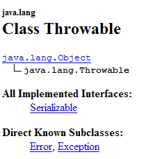
The [Throwable] type is the parent class of [Exception].
Here, we need to verify that the [Throwable] object thrown by the Firebird JDBC driver—which caused the [SQLException] thrown by the [iBATIS] layer—is indeed an exception of type [org.firebirdsql.gds.GDSException] with error code 335544336. To retrieve the error code, we can use the [getErrorCode()] method of the [org.firebirdsql.gds.GDSException] class.
If we use the [org.firebirdsql.gds.GDSException] exception in the [ThreadDaoMajEnfants] code, then this thread will only work with the Firebird DBMS. The same will apply to the [test4] test that uses this thread. We want to avoid this. Indeed, we want our JUnit tests to remain valid regardless of the DBMS used. To achieve this, we decide that the [dao] layer will throw a [DaoException] with code 4 whenever an "update conflict" exception is detected, regardless of the underlying DBMS. Thus, the [ThreadDaoMajEnfants] thread can be rewritten as follows:
- lines 34-36: the [DaoException] exception with code 4 is caught. The [ThreadDaoMajEnfants] thread will be forced to restart the update procedure from the beginning (line 10)
Our [dao] layer must therefore be able to recognize an "update conflict" exception. This exception is thrown by a JDBC driver and is specific to it. This exception must be handled in the [updatePerson] method of the [DaoImplCommon] class:
Lines 7–11 must be enclosed in a try/catch block. For the Firebird DBMS, we need to verify that the exception that caused the update to fail is of type [org.firebirdsql.gds.GDSException] and has error code 335544336. If we put this type of test in [DaoImplCommon], we will tie this class to the Firebird DBMS, which is obviously undesirable. If we want to keep the [DaoImplCommon] class general-purpose, we need to derive it and handle the exception in a Firebird-specific class. That is what we are doing now.
17.4.2. The [DaoImplFirebird] class
Its code is as follows:
- line 5: the [DaoImplFirebird] class derives from [DaoImplCommon], the class we just studied. It redefines, on lines 8–33, the [updatePersonne] method that is causing us problems.
- lines 20: we catch the Spring exception of type [UncategorizedSQLException]
- lines 21–22: we verify that the underlying exception of type [SQLException], thrown by the [iBATIS] layer, is caused by an exception of type [org.firebirdsql.jdbc.FBSQLException]
- Line 25: We also verify that the error code for this Firebird exception is 335544336, the "deadlock" error code.
- lines 26-27: if all these conditions are met, a [DaoException] with code 4 is thrown.
- lines 36-44: the [wait] method pauses the current thread for N milliseconds. It is only useful for testing.
We are ready to test the new [dao] layer.
17.4.3. Testing the [DaoImplFirebird] implementation
The test configuration file [spring-config-test-dao-firebird.xml] is modified to use the [DaoImplFirebird] implementation:
<?xml version="1.0" encoding="ISO_8859-1"?>
<!DOCTYPE beans SYSTEM "http://www.springframework.org/dtd/spring-beans.dtd">
<beans>
<!-- the DBCP data source -->
<bean id="dataSource" class="org.apache.commons.dbcp.BasicDataSource"
destroy-method="close">
<property name="driverClassName">
<value>org.firebirdsql.jdbc.FBDriver</value>
</property>
<!-- Note: Do not leave spaces between the two <value> tags -->
<property name="url">
<value>jdbc:firebirdsql:localhost/3050:C:/data/2005-2006/eclipse/dvp-eclipse-tomcat/mvc-personnes-03/database/dbpersonnes.gdb</value>
</property>
<property name="username">
<value>sysdba</value>
</property>
<property name="password">
<value>masterkey</value>
</property>
</bean>
<!-- SqlMapClient -->
<bean id="sqlMapClient"
class="org.springframework.orm.ibatis.SqlMapClientFactoryBean">
<property name="dataSource">
<ref local="dataSource"/>
</property>
<property name="configLocation">
<value>classpath:sql-map-config-firebird.xml</value>
</property>
</bean>
<!-- the DAO access classes -->
<bean id="dao" class="istia.st.mvc.personnes.dao.DaoImplFirebird">
<property name="sqlMapClient">
<ref local="sqlMapClient"/>
</property>
</bean>
</beans>
- Line 32: the new implementation [DaoImplFirebird] of the [dao] layer.
The results of the [test4] test, which had previously failed, are as follows:

[test4] passed. The last lines of the screen logs are as follows:
The last line indicates that thread #36 was the last to finish. Line 3 shows a version conflict that forced thread #36 to restart its person update procedure (line 4). Other logs show access conflicts during updates:
Line 2 shows that thread #75 failed during its update due to an update conflict: when the SQL [update] command was issued on the [PERSONNES] table, the row that needed to be updated was locked by another thread. This access conflict will force thread #75 to retry its update.
To conclude with [test4], we note a significant difference from the results of the same test in version 1, where it failed due to synchronization issues. Since the methods in the [dao] layer of version 1 were not synchronized, access conflicts occurred. Here, we did not need to synchronize the [dao] layer. We simply handled the access conflicts reported by Firebird.
Let’s now run the entire JUnit test for the [dao] layer:

It therefore appears that we have a valid [dao] layer. To declare it valid with a high degree of certainty, we would need to perform further testing. Nevertheless, we will consider it operational.
17.5. The [service] layer
17.5.1. The components of the [service] layer
The [service] layer consists of the following classes and interfaces:

- [IService] is the interface presented by the [service] layer
- [ServiceImpl] is an implementation of this interface
The [IService] interface is as follows:
- The interface has the same four methods as in version 1, but it has two additional ones:
- saveMany: allows you to save multiple people at the same time in an atomic manner. Either they are all saved, or none are.
- deleteMany: allows you to delete multiple people at the same time in an atomic manner. Either they are all deleted, or none are.
These two methods will not be used by the web application. We added them to illustrate the concept of a database transaction. Both methods must be executed within a transaction to achieve the desired atomicity.
The [ServiceImpl] class implementing this interface will be as follows:
- The methods [getAll, getOne, insertOne, saveOne] call the methods of the [dao] layer with the same names.
- Lines 42–47: The [saveMany] method saves, one by one, the people in the array passed as a parameter.
- Lines 50–55: The [deleteMany] method deletes, one by one, the people whose IDs are passed as an array parameter.
We mentioned that the [saveMany] and [deleteMany] methods must be executed within a transaction to ensure the all-or-nothing nature of these methods. We can see that the code above completely ignores this concept of transactions. This will only appear in the configuration file of the [service] layer.
17.5.2. Configuration of the [ service] layer
Above, on line 11, we see that the [ServiceImpl] implementation holds a reference to the [dao] layer. This, as in version 1, will be initialized by Spring when the [service - ServiceImpl] layer is instantiated. The configuration file that will enable the instantiation of the [service] layer is as follows:
<?xml version="1.0" encoding="ISO_8859-1"?>
<!DOCTYPE beans SYSTEM "http://www.springframework.org/dtd/spring-beans.dtd">
<beans>
<!-- the DBCP data source -->
<bean id="dataSource" class="org.apache.commons.dbcp.BasicDataSource"
destroy-method="close">
<property name="driverClassName">
<value>org.firebirdsql.jdbc.FBDriver</value>
</property>
<property name="url">
<!-- Note: Do not leave spaces between the two <value> tags -->
<value>jdbc:firebirdsql:localhost/3050:C:/data/2005-2006/eclipse/dvp-eclipse-tomcat/mvc-personnes-03/database/dbpersonnes.gdb</value>
</property>
<property name="username">
<value>sysdba</value>
</property>
<property name="password">
<value>masterkey</value>
</property>
</bean>
<!-- SqlMapClient -->
<bean id="sqlMapClient"
class="org.springframework.orm.ibatis.SqlMapClientFactoryBean">
<property name="dataSource">
<ref local="dataSource"/>
</property>
<property name="configLocation">
<value>classpath:sql-map-config-firebird.xml</value>
</property>
</bean>
<!-- the classes for accessing the [DAO] layer -->
<bean id="dao" class="istia.st.mvc.personnes.dao.DaoImplFirebird">
<property name="sqlMapClient">
<ref local="sqlMapClient"/>
</property>
</bean>
<!-- transaction manager -->
<bean id="transactionManager"
class="org.springframework.jdbc.datasource.DataSourceTransactionManager">
<property name="dataSource">
<ref local="dataSource"/>
</property>
</bean>
<!-- classes for accessing the [service] layer -->
<bean id="service"
class="org.springframework.transaction.interceptor.TransactionProxyFactoryBean">
<property name="transactionManager">
<ref local="transactionManager"/>
</property>
<property name="target">
<bean class="istia.st.mvc.personnes.service.ServiceImpl">
<property name="dao">
<ref local="dao"/>
</property>
</bean>
</property>
<property name="transactionAttributes">
<props>
<prop key="get*">PROPAGATION_SUPPORTS,readOnly</prop>
<prop key="save*">PROPAGATION_REQUIRED</prop>
<prop key="delete*">PROPAGATION_REQUIRED</prop>
</props>
</property>
</bean>
</beans>
- lines 1–36: configuration of the [dao] layer. This configuration was explained when discussing the [dao] layer in section 17.3.2.
- Lines 38–64: configure the [service] layer
In line 46, we can see that the [service] layer is implemented by the [TransactionProxyFactoryBean] type. We expected to find the [ServiceImpl] type. [TransactionProxyFactoryBean] is a predefined Spring type. How is it possible for a predefined type to implement the [IService] interface, which is specific to our application?
Let’s first take a look at the [TransactionProxyFactoryBean] class:

We see that it implements the [FactoryBean] interface. We have already encountered this interface. We know that when an application requests an instance of a type implementing [FactoryBean] from Spring, Spring returns not an [I] instance of that type, but the object returned by the [I].getObject() method:

In our case, the [service] layer will be implemented by the object returned by [TransactionProxyFactoryBean].getObject(). What is the nature of this object? We won’t go into the details because they are complex. They fall under what is known as Spring AOP (Aspect-Oriented Programming). We’ll try to clarify things with some simple diagrams. AOP allows for the following:
- We have two classes, C1 and C2, where C1 uses the [I2] interface provided by C2:
 |
- Thanks to AOP, we can place an interceptor between classes C1 and C2 in a way that is transparent to both classes:
 |
Class [C1] has been compiled to work with the interface [I2] that [C2] implements. At runtime, AOP places the [interceptor] class between [C1] and [C2]. For this to be possible, the [interceptor] class must, of course, present the same [I2] interface to [C1] as [C2] does.
What is this used for? The Spring documentation provides a few examples. For example, you might want to log calls to a specific method M of [C2] in order to audit that method. In [interceptor], you would then write a method [M] that performs these logs. The call from [C1] to [C2].M will proceed as follows (see diagram above):
- [C1] calls method M of [C2]. In fact, it is method M of [interceptor] that will be called. This is possible if [C1] addresses an interface [I2] rather than a specific implementation of [I2]. It is then sufficient for [interceptor] to implement [I2].
- The method M of [interceptor] logs the information and calls the method M of [C2] that was initially targeted by [C1].
- The M method of [C2] executes and returns its result to the M method of [interceptor], which may optionally add something to what was done in step 2.
- The method M of [interceptor] returns a result to the calling method of [C1]
We see that the M method of [interceptor] can do something before and after the call to the M method of [C2]. From the perspective of [C1], it therefore enriches the M method of [C2]. We can thus view AOP technology as a way to enrich the interface presented by a class.
How does this concept apply to our [service] layer? If we implement the [service] layer directly with a [ServiceImpl] instance, our web application will have the following architecture:
 |
If we implement the [service] layer with a [TransactionProxyFactoryBean] instance, we will have the following architecture:
 |
We can say that the [service] layer is instantiated with two objects:
- the object we refer to above as the [transactional proxy], which is actually the object returned by the [getObject] method of [TransactionProxyFactoryBean]. This object acts as the interface between the [service] layer and the [web] layer. By design, it implements the [IService] interface.
- a [ServiceImpl] instance, which also implements the [IService] interface. It alone knows how to work with the [dao] layer, so it is necessary.
Let’s imagine that the [web] layer calls the [saveMany] method of the [IService] interface. We know that, functionally, the inserts/updates performed by this method must be done within a transaction. Either they all succeed, or none are performed. We introduced the [saveMany] method of the [ServiceImpl] class and noted that it lacked the concept of a transaction. The [saveMany] method of the [transactional proxy] will enhance the [saveMany] method of the [ServiceImpl] class with this concept of a transaction. Let’s follow the diagram above:
- The [web] layer calls the [saveMany] method of the [IService] interface.
- The [saveMany] method of [transactional proxy] is executed. It starts a transaction. It must have sufficient information to do so, notably a [DataSource] object to establish a connection to the DBMS. Then it calls the [saveMany] method of [ServiceImpl].
- This method executes. It repeatedly calls the [dao] layer to perform the inserts or updates. The SQL statements executed at this time are executed within the transaction started in step 2.
- Suppose one of these operations fails. The [dao] layer will propagate an exception up to the [service] layer, specifically the [saveMany] method of the [ServiceImpl] instance.
- This method does nothing and allows the exception to propagate up to the [saveMany] method of [transactional proxy].
- Upon receiving the exception, the [saveMany] method of [transactional proxy], which owns the transaction, performs a [rollback] to cancel all updates, then allows the exception to propagate up to the [web] layer, which will be responsible for handling it.
In step 4, we assumed that one of the inserts or updates failed. If this is not the case, in [5] no exception is propagated. The same applies in [6]. In this case, the [saveMany] method of [transactional proxy] commits the transaction to validate all updates.
We now have a clearer picture of the architecture implemented by the [TransactionProxyFactoryBean] bean. Let’s revisit its configuration:
<!-- transaction manager -->
<bean id="transactionManager"
class="org.springframework.jdbc.datasource.DataSourceTransactionManager">
<property name="dataSource">
<ref local="dataSource"/>
</property>
</bean>
<!-- classes for accessing the [service] layer -->
<bean id="service"
class="org.springframework.transaction.interceptor.TransactionProxyFactoryBean">
<property name="transactionManager">
<ref local="transactionManager"/>
</property>
<property name="target">
<bean class="istia.st.mvc.personnes.service.ServiceImpl">
<property name="dao">
<ref local="dao"/>
</property>
</bean>
</property>
<property name="transactionAttributes">
<props>
<prop key="get*">PROPAGATION_REQUIRED,readOnly</prop>
<prop key="save*">PROPAGATION_REQUIRED</prop>
<prop key="delete*">PROPAGATION_REQUIRED</prop>
</props>
</property>
</bean>
Let’s examine this configuration in light of the architecture that is set up:
 |
- [transactional proxy] will manage transactions. Spring offers several transaction management strategies. [transactional proxy] requires a reference to the chosen transaction manager.
- Lines 11–13: define the [transactionManager] attribute of the [TransactionProxyFactoryBean] bean with a reference to a transaction manager. This is defined in lines 2–7.
- Lines 2–7: The transaction manager is of type [DataSourceTransactionManager]:
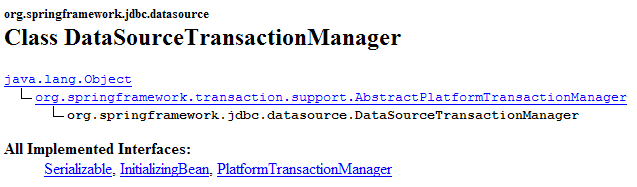
[DataSourceTransactionManager] is a transaction manager suited for DBMSs accessed via a [DataSource] object. It can only manage transactions on a single DBMS. It cannot manage transactions distributed across multiple DBMSs. Here, we have only a single DBMS. Therefore, this transaction manager is suitable. When the [transactional proxy] starts a transaction, it does so on a connection attached to the thread. This connection will be used in all layers leading to the database: [ServiceImpl, DaoImplCommon, SqlMapClientTemplate, JDBC].
The [DataSourceTransactionManager] class needs to know the data source from which it must request a connection to attach to the thread. This is defined in lines 4–6: it is the same data source as the one used by the [dao] layer (see section 17.5.2).
- Lines 14–19: The "target" attribute specifies the class to be intercepted, in this case the [ServiceImpl] class. This information is necessary for two reasons:
- the [ServiceImpl] class must be instantiated since it handles communication with the [dao] layer
- [TransactionProxyFactoryBean] must generate a proxy that presents the same interface as [ServiceImpl] to the [web] layer.
- Lines 21–27: specify which methods of [ServiceImpl] the proxy must intercept. The [transactionAttributes] attribute on line 21 indicates which methods of [ServiceImpl] require a transaction and what the transaction’s attributes are:
- line 23: methods whose names begin with get [getOne, getAll] are executed within a transaction with the attributes [PROPAGATION_REQUIRED, readOnly]:
- PROPAGATION_REQUIRED: the method runs in a transaction if one is already attached to the thread; otherwise, a new one is created and the method runs within it.
- readOnly: read-only transaction
Here, the [getOne] and [getAll] methods of [ServiceImpl] will execute within a transaction, even though this is not actually necessary. Each operation consists of a single SELECT statement. We do not see the point of placing this SELECT within a transaction.
- Line 24: Methods whose names begin with "save"—[saveOne] and [saveMany]—execute within a transaction with the [PROPAGATION_REQUIRED] attribute.
- Line 25: The [deleteOne] and [deleteMany] methods of [ServiceImpl] are configured identically to the [saveOne] and [saveMany] methods.
In our [service] layer, only the [saveMany] and [deleteMany] methods need to be executed within a transaction. The configuration could have been reduced to the following lines:
<property name="transactionAttributes">
<props>
<prop key="saveMany">PROPAGATION_REQUIRED</prop>
<prop key="deleteMany">PROPAGATION_REQUIRED</prop>
</props>
</property>
17.6. Testing the [service] layer
Now that we have written and configured the [service] layer, we will test it using JUnit tests:

The [service] layer's configuration file [spring-config-test-service-firebird.xml] is the one described in Section 17.5.2.
The JUnit test [TestServiceFirebird] is as follows:
1 2 3 4 5 6 7 8 9 10 11 12 13 14 15 16 17 18 19 20 21 22 23 24 25 26 27 28 29 30 31 32 33 34 35 36 37 38 39 40 41 42 43 44 45 46 47 48 49 50 51 52 53 54 55 56 57 58 59 60 61 62 63 64 65 66 67 68 69 70 71 72 73 74 75 76 77 78 79 80 81 82 83 84 85 86 87 88 89 90 91 92 93 94 95 96 97 98 99 100 101 102 103 104 105 106 107 108 109 110 111 112 113 114 115 116 117 118 119 120 121 122 123 124 125 126 127 128 129 130 131 132 133 134 135 136 137 138 139 140 141 142 143 144 145 146 147 148 149 150 151 152 153 154 155 156 157 | |
- lines 19–22: the program tests the [dao] and [service] layers configured by the [spring-config-test-service-firebird.xml] file, which was discussed in the previous section.
- The tests [test1] through [test6] are conceptually identical to their counterparts of the same name in the [TestDaoFirebird] test class of the [dao] layer. The only difference is that, by configuration, the [saveOne] and [deleteOne] methods now execute within a transaction.
- The purpose of the [test7] method is to test the [saveMany] and [deleteMany] methods. We want to verify that they are indeed executed within a transaction. Let’s comment on the code for this method:
- lines 62–63: we count the number of people [nbPersonnes1] currently in the list
- lines 67–72: we create three people
- lines 73–83: these three people are saved by the [saveMany] method – line 77. The first two people, p1 and p2, with an ID equal to -1 will be added to the [PERSONNES] table. Person p3 has an ID equal to -2. This is therefore not an insertion but an update. This update will fail because there is no person with an ID of -2 in the [PERSONS] table. The [dao] layer will therefore throw an exception that will propagate up to the [service] layer. The existence of this exception is checked in line 83.
- Due to the previous exception, the [service] layer should roll back all SQL statements issued during the execution of the [saveMany] method, since this method runs within a transaction. Lines 86–87: We verify that the number of people in the list has not changed, meaning that the insertions of p1 and p2 did not take place.
- Lines 88–103: We add only p1 and p2 and verify that there are now two more people in the list.
- Lines 106–114: We delete a group of people consisting of the people p1 and p2 that we just added and a non-existent person (id = -1). The [deleteMany] method is used for this, line 108. This method will fail because there is no person with an id equal to –1 in the [PERSONNES] table. The [dao] layer will therefore throw an exception that will propagate up to the [service] layer. The existence of this exception is checked on line 114.
- Due to the previous exception, the [service] layer should perform a [rollback] of all SQL statements issued during the execution of the [deleteMany] method, since this method runs within a transaction. Lines 116–117: We verify that the number of people in the list has not changed and that, therefore, the deletions of p1 and p2 did not occur.
- Line 122: We delete a group consisting solely of people p1 and p2. This should succeed. The rest of the method verifies that this is indeed the case.
Running the tests yields the following results:
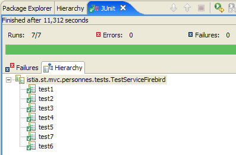
All seven tests were successful. We will consider our [service] layer to be operational.
17.7. The [w eb] layer
Let’s review the general architecture of the web application to be built:
 |
We have just built the [dao] and [service] layers to work with a Firebird database. We wrote a version 1 of this application where the [dao] and [service] layers worked with a list of people in memory. The [web] layer written at that time remains valid. Indeed, it was intended for a [service] layer implementing the [IService] interface. Since the new [service] layer implements this same interface, the [web] layer does not need to be modified.
In the previous article, version 1 of the application was tested with the Eclipse project [mvc-personnes-02B], where the [web, service, dao, entities] layers were packaged in .jar files:
 |
The [src] folder was empty. The layer classes were in the [people-*.jar] archives:
 |
To test version 2, in Eclipse we duplicate the [mvc-personnes-02B] folder into [mvc-personnes-03B] (copy/paste):
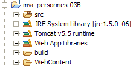
In the [mvc-personnes-03] project, we export [File / Export / Jar file] the [DAO] and [service] layers respectively into the [personnes-dao.jar] and [personnes-service.jar] archives in the project’s [dist] folder:

We copy these two files, then in Eclipse we paste them into the [WEB-INF/lib] folder of the [mvc-personnes-03B] project, where they will replace the files of the same name from the previous version.
 |
We also copy and paste the archives [commons-dbcp-*.jar, commons-pool-*.jar, firebirdsql-full.jar, ibatis-common-2.jar, ibatis-sqlmap-2.jar] from the [lib] folder of the [mvc-personnes-03] project into the [WEB-INF/lib] folder of the [mvc-personnes-03B] project. These JAR files are required for the new [dao] and [service] layers.
Once this is done, we include the new JAR files in the project’s Classpath: [right-click on the project -> Properties -> Java Build Path -> Add Jars].
The [src] folder contains the configuration files for the [dao] and [service] layers:

The [spring-config.xml] file configures the [dao] and [service] layers of the web application. In the new version, it is identical to the [spring-config-test-service-firebird.xml] file used to configure the service layer test in the [mvc-personnes-03] project. We therefore copy and paste from one to the other:
<?xml version="1.0" encoding="ISO_8859-1"?>
<!DOCTYPE beans SYSTEM "http://www.springframework.org/dtd/spring-beans.dtd">
<beans>
<!-- the DBCP data source -->
<bean id="dataSource" class="org.apache.commons.dbcp.BasicDataSource"
destroy-method="close">
<property name="driverClassName">
<value>org.firebirdsql.jdbc.FBDriver</value>
</property>
<property name="url">
<!-- Note: Do not leave any spaces between the two <value> tags -->
<value>jdbc:firebirdsql:localhost/3050:C:/data/2005-2006/eclipse/dvp-eclipse-tomcat/mvc-personnes-03/database/dbpersonnes.gdb</value>
</property>
<property name="username">
<value>sysdba</value>
</property>
<property name="password">
<value>masterkey</value>
</property>
</bean>
<!-- SqlMapClient -->
<bean id="sqlMapClient"
class="org.springframework.orm.ibatis.SqlMapClientFactoryBean">
<property name="dataSource">
<ref local="dataSource"/>
</property>
<property name="configLocation">
<value>classpath:sql-map-config-firebird.xml</value>
</property>
</bean>
<!-- The DAO class -->
<bean id="dao" class="istia.st.mvc.personnes.dao.DaoImplFirebird">
<property name="sqlMapClient">
<ref local="sqlMapClient"/>
</property>
</bean>
<!-- transaction manager -->
<bean id="transactionManager"
class="org.springframework.jdbc.datasource.DataSourceTransactionManager">
<property name="dataSource">
<ref local="dataSource"/>
</property>
</bean>
<!-- classes for accessing the [service] layer -->
<bean id="service"
class="org.springframework.transaction.interceptor.TransactionProxyFactoryBean">
<property name="transactionManager">
<ref local="transactionManager"/>
</property>
<property name="target">
<bean class="istia.st.mvc.people.service.ServiceImpl">
<property name="dao">
<ref local="dao"/>
</property>
</bean>
</property>
<property name="transactionAttributes">
<props>
<prop key="get*">PROPAGATION_SUPPORTS,readOnly</prop>
<prop key="save*">PROPAGATION_REQUIRED</prop>
<prop key="delete*">PROPAGATION_REQUIRED</prop>
</props>
</property>
</bean>
</beans>
- Line 12: the URL of the Firebird database. We continue to use the database used for testing the [dao] and [service] layers
We deploy the [mvc-personnes-03B] web project within Tomcat:
 | 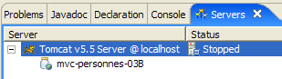 |
We are ready for the test . The Firebird DBMS is running. The contents of the [PERSONNES] table are as follows:

Tomcat is then started. Using a browser, we request the URL [http://localhost:8080/mvc-personnes-03B]:

We add a new person using the [Add] link:
 |  |
We verify the addition in the database:

The reader is invited to perform other tests [edit, delete].
Now let’s perform the version conflict test that was done in Version 1. [Firefox] will be User U1’s browser. User U1 requests the URL [http://localhost:8080/mvc-personnes-03B]:

[IE] will be user U2’s browser. User U2 requests the same URL:

User U1 enters the person’s details [Perrichon]:

User U2 does the same:

User U1 makes changes and submits:
 |
User U2 does the same:
 |
User U2 returns to the list of people using the [Cancel] link on the form:

They find the person [Perrichon] as modified by U1 (name now in uppercase).
And what about the database? Let’s take a look:

Person #899’s name is indeed in uppercase following the modification made by U1.
17.8. Conclusion
Let’s recap what we wanted to do. We had a web application with the following three-tier architecture:
where the [dao] and [service] layers worked with an in-memory data list that was lost when the web server was shut down. That was version 1. In version 2, the [service] and [dao] layers were rewritten so that the list of people is stored in a database table. It is now persistent. We now propose to examine the impact that changing the DBMS has on our application. To do this, we will build three new versions of our web application:
 |
- Version 3: the DBMS is Postgres
- Version 4: the DBMS is MySQL
- Version 5: the DBMS is SQL Server Express 2005
Changes are made in the following locations:
- The [DaoImplFirebird] class implements [dao] layer functionality related to the Firebird DBMS. If this requirement remains, it will be replaced by the [DaoImplPostgres], [DaoImplMySQL], and [DaoImplSqlExpress] classes, respectively.
- The iBATIS mapping file [personnes-firebird.xml] for the Firebird DBMS will be replaced by the mapping files [personnes-postgres.xml], [personnes-mysql.xml], and [personnes-sqlexpress.xml], respectively.
- The configuration of the [DataSource] object in the [dao] layer is specific to a DBMS. It will therefore change with each version.
- The DBMS’s JDBC driver also changes with each version
Apart from these points, everything else remains the same. In the following sections, we describe these new versions, focusing solely on the new features introduced by each one.